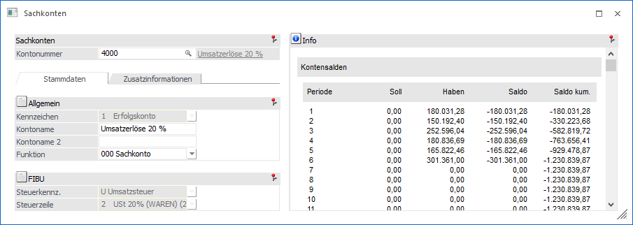
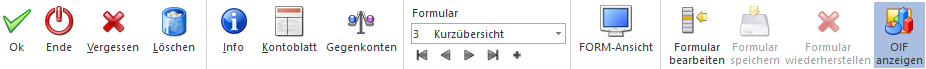

Dieses Fenster wird geöffnet, wenn im Sachkontenstamm ein alternatives Formular zur Bearbeitung von Stammdaten ausgewählt wurde.
Hinweis
Bei Nutzung der FORM-Ansicht wird der Sachkontenstamm in einem "Lesemodus" geöffnet, d.h. es können bestehende Sachkonten aufgerufen und kontrolliert werden, ein Ändern bzw. eine Neuanlage ist nicht möglich. Hierfür muss zunächst mit Hilfe des Buttons "Editieren" der "Bearbeitungsmodus" aktiviert werden.
Ø Formular
Über die Auswahlbox "Formular" kann gewählt werden, in welcher Form der Stammdatensatz bearbeitet werden soll. Wenn die Option "0 - Allgemein" gewählt wird, dann wird wieder in die "Normalansicht" mit allen Eingabefeldern zurückgeschalten.
Hinweis
Die Definition der Formulare für die individuelle Gestaltung erfolgt im Programm WinLine START über den Menüpunkt "Vorlagen - Vorlagen Anlage - Individuelle Formulare". Das Ergebnis davon könnte z.B. so aussehen:

Buttons

Ø Ok
Durch Anwahl des Buttons "Ok" bzw. der Taste F5 werden die vorgenommenen Änderungen bzw. die Neuanlage abgespeichert.
Hinweis 1
Durch die Tastenkombination SHIFT + F5 erfolgt eine Zwischenspeicherung des Sachkontos.
Hinweis 2
Über die FIBU-Applikationsparameter (Programm WinLine START, Menüpunkt Parameter/Applikations-Parameter) kann eingestellt werden, ob neu angelegte bzw. geänderte Konten in Vor- oder Folgewirtschaftsjahre übernommen werden sollen. Diese Übernahme kann entweder automatisch oder manuell erfolgen. Wenn die Übernahme manuell erfolgen soll, so wird beim Speichern des Kontos das Fenster "Konto aktualisieren" geöffnet, wo die Wirtschaftsjahre ausgewählt werden können, auf die Änderungen bzw. das neue Konto "kopiert" werden sollen.
Ø Ende
Bei Anwahl des Buttons "Ende" bzw. der Taste ESC wird der Programmbereich verlassen und alle nicht gespeicherten Änderungen verworfen.
Ø Löschen
Durch Anklicken des Buttons "Löschen" wird das aktuelle Sachkonto gelöscht. Voraussetzung hierfür ist, dass das Konto nicht bebucht ist und auch sonst nicht mehr verwendet wird (z.B. Skontokonto einer Steuerzeile).
Ø Info
Durch Anwahl des "Info"-Buttons wird die "Konteninfo" geöffnet. An dieser Stelle erhält man detaillierte Informationen zu dem angelegten Sachkonto (z.B. Monatsumsätze, Salden, etc.). Drückt man während der Anwahl des Buttons die SHIFT-Taste, so wird die "Sachkonteninformation" in der Applikation WinLine INFO geöffnet. Dieser Button ist auch mittels den Shortcuts ALT + i (öffnet die "Konteninfo" in WinLine FAKT) oder SHIFT + ALT + i (öffnet die "Sachkonteninformation" in WinLine INFO) anwählbar.
Ø Kontoblatt
Durch Anklicken des Buttons "Kontoblatt" wird das Kontoblatt zu diesem Konto angezeigt, wobei das Kontoblatt ohne weitere Einschränkungen ausgegeben wird.
Ø Kontoblatt Tabelle
Durch Anklicken dieses Buttons wird das Kontoblatt ohne weitere Einschränkungen als Tabelle ausgegeben.
Ø Gegenkonten
Über den Button "Gegenkonten" wird das Fenster "Gegenkonten / Vorschlag bearbeiten" geöffnet. Hier werden die definierten Gegenkonten für das geladene Konto angezeigt und können editiert werden.
Ø Formular
Über die Auswahlbox "Formular" kann gewählt werden, in welcher Form der Stammdatensatz bearbeitet werden soll. Wenn die Option "0 - Allgemein" gewählt wird, dann wird wieder in die "Normalansicht" mit allen Eingabefeldern zurückgeschalten.
Hinweis
Die Definition der Formulare für die individuelle Gestaltung erfolgt im Programm WinLine START über den Menüpunkt "Vorlagen - Vorlagen Anlage - Individuelle Formulare".
Ø VCR-Buttons
Über die so genannten VCR-Buttons kann durch Mausklick zwischen den Datensätzen geblättert werden.
ü  Damit kann der erste Datensatz angesprochen werden.
Damit kann der erste Datensatz angesprochen werden.
ü  Damit kann der vorherige Datensatz angesprochen werden.
Damit kann der vorherige Datensatz angesprochen werden.
ü  Damit kann der nächste Datensatz angesprochen werden.
Damit kann der nächste Datensatz angesprochen werden.
ü  Damit kann der letzte Datensatz angesprochen werden.
Damit kann der letzte Datensatz angesprochen werden.
ü  Damit wird die nächste freie Nummer für die Neuanlage gesucht.
Damit wird die nächste freie Nummer für die Neuanlage gesucht.
Ø FORM-Ansicht
Mit Hilfe dieses Buttons kann die sogenannte "FORM-Ansicht" aktiviert werden. Im Gegensatz zur klassischen Eingabe unterstützt diese folgende Funktionen:
ü Lese- und Bearbeitungsmodus
ü Responsive HTML-Design
ü Erweiterte Layout-Komponenten
Hinweis
Die FORM-Ansicht basiert immer auf der Definition des individuellen Formulars. Die Gestaltung des Layouts kann wiederum in der WinLine INFO über den Menüpunkt "FORM - Designer" erfolgen.
Ø Formular bearbeiten
Durch Anwahl des Buttons "Formular bearbeiten" wird das ausgewählte Formular (d.h. die Vorlage) in einen Bearbeitungsmodus versetzt (Felder können verschoben, entfernt oder neue einfügt werden). Durch eine erneute Anwahl des Buttons wird der Modus wieder verlassen.
Hinweis
Der Button kann nur angewählt werden, wenn das Objektrecht "bearbeiten" (oder höher) für das individuelle Formular vorhanden ist.
Ø Formular speichern
Mit Hilfe dieses Buttons können vorgenommene Formularänderungen gespeichert werden.
Ø Formular wiederherstellen
Wenn Formularänderungen getätigt wurden, dann kann durch Anwahl des Buttons "Formular wiederherstellen" das ursprüngliche Formular wiederhergestellt werden.
Ø OIF anzeigen
Mit Hilfe dieses Buttons kann der OIF-Bereich im rechten Bereich des Fensters aktiviert bzw. deaktiviert werden.
Hinweis
Eine Aktivierung ist nur möglich, wenn in der Vorlage die Option "OIF anzeigen" aktiviert wurde.